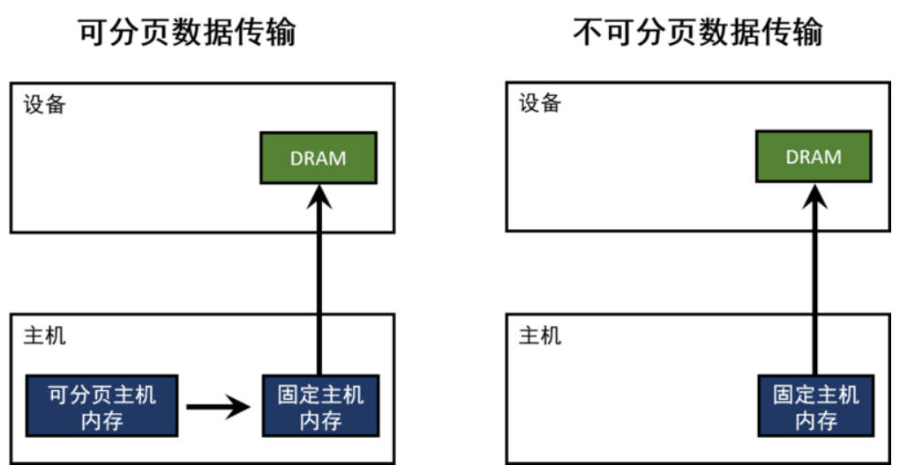

CUDA 内存分配API
一、cudaMalloc
这是CUDA里最基础的内存分配方式，核心作用很简单，就是专门分配显存的。
- 访问权限：只能 GPU 使用，CPU 访问将会出现 SegmentFault，必须用
cudaMemcpy手动搬数据（CPU和GPU之间来回传）。 - 适用场景：纯 GPU 计算、数据不用 CPU 频繁访问的场景，比如批量处理数据，全程靠 GPU 干活，数据只进不出。
- 核心优势：简洁直观
1 | |
二、cudaMallocHost
host内存：分为 pageable memory 和 pinned memory
- pageable memory： 通过操作系统 API（malloc，new）分配的存储器空间
- pinned memory：始终存在于物理内存中，不会被分配到低速的虚拟内存中，能够通过 DMA 加速与设备端进行通信
使用 Malloc 分配的内存都是 Pageable(交换页)的，而另一个模式就是 Pinned(Page-locked)，实质是强制让系统在物理内存中完成内存申请和释放的工作，不参与页交换，从而提高系统效率，需要使用 cudaHostAlloc 和cudaFreeHost (cudaMallocHost 的内存也这样释放) 来分配和释放。
-
pinned memory 优点：主机端-设备端的数据传输带宽高；某些设备上可以通过 zero-copy 功能映射到设备地址空间，从 GPU 直接访问，省掉主存与显存间进行数据拷贝的工作
-
pinned memory 缺点：pinned memory 不可以分配过多：导致操作系统 用于分页的物理内存变少， 导致系统整体性能下降；通常由哪个 CPU 线程分配，就只有这个线程才有访问权限
cudaMallocHost 分配的是"锁页主机内存"（pinned memory），CPU 和 GPU 都能高效访问。
1 | |
cudaMallocHost为什么比cudaMalloc快？
主机(CPU)数据分配的内存默认是可分页的。GPU 不能直接访问可分页的主机内存，所以当从可分页内存到设备内存的进行数据传输时，CUDA驱动必须首先分配一个临时的不可分页的或者固定的主机数组，然后将主机数据拷贝到固定数组里，最后再将数据从固定数组转移到设备内存，如下图所示：

1 | |
三、cudaMallocManaged
能够分配统一内存（Managed Memory），CPU 和 GPU 能用同一个指针访问，不用手动写cudaMemcpy，省了很多代码。
- 访问权限：CPU 和 GPU 共用一个虚拟地址指针，不用手动搬数据，驱动会自动处理。
- 底层机制：靠“缺页中断”干活——你访问数据时，如果数据不在当前处理器（CPU或GPU）的物理内存里，驱动会自动把数据迁过去。
- 核心痛点：默认用64KB小页，要是数据量大，会触发一大堆缺页中断，性能忽高忽低）。
cudaMallocManaged 的核心是“动态换页”，靠缺页中断让驱动自动搬运数据，实现 CPU/GPU 共用指针，但也因此带来了额外的开销。反过来对比 cudaMalloc 的“不换页”，就能更清晰理解两者的底层差异。
cudaMallocManaged 之所以需要换页，本质是它分配的统一内存，物理地址可能在 CPU 内存，也可能在 GPU 显存，驱动需要根据访问场景动态切换映射；而 cudaMalloc 分配的是纯 GPU 显存，从分配那一刻起，GPU页表里的虚拟地址就和物理显存地址绑死了，不会再发生变化。这也是为什么 cudaMalloc 没有隐式搬运开销、性能更稳定，它不用处理缺页中断，不用动态更新页表，地址转换全靠 GPU 硬件完成，速度更快。
可以发现 cudaMallocManaged 的性能瓶颈，核心就出在页表和缺页中断上，具体有两个关键问题：
- TLB 容量有限，无法存储过多页表映射条目。尤其是默认使用 64KB 小页时，页表条目会急剧增多，很容易导致 TLB Miss 频繁发生，MMU 只能反复遍历页表查找地址，额外增加大量性能开销；
- 大数据量场景下，64KB 小页会触发数万次甚至几十万次缺页中断，GPU 大部分时间都在等待驱动处理中断、搬运数据，原本的编程便捷性，反而被严重的性能损耗抵消。
针对这些问题，最直接有效的解决方案就是大页优化（2MB Huge Pages）——既然 64KB 小页无法满足高性能需求，增大页大小、减少页表条目和缺页次数，就能从根源上缓解性能瓶颈。
核心原理就是减少缺页中断次数，采用2MB大页后，单次缺页中断可搬运2MB数据，同样是1GB数据，缺页中断次数会从16384次大幅降至512次，极大减少驱动介入频率，降低MMU的地址转换开销，进而提升cudaMallocManaged的性能稳定性。
1 | |
四、cudaMallocAsync
cudaMallocAsync 是一个异步内存分配函数，专门解决“高频分配/释放内存”的痛点, 比如AI训练、推理时，要频繁给每一批数据分配内存，用它能省不少开销，还能减少显存碎片化。
异步的核心含义：很多人看到异步，就误以为是CPU和GPU完全独立、各干各的，其实这是错误的。cudaMallocAsync 的“异步”，核心是 CPU 侧无阻塞，但GPU侧会受到流上下文的严格约束，具体可以拆成两点理解：
- CPU 侧无阻塞：调用
cudaMallocAsync后，CPU 不需要等待 GPU 完成内存池的内存切分操作，就能直接执行后续的 CPU 代码，不会被内存分配操作“卡住”，大幅提升整体执行效率； - 流上下文约束：分配的内存会和调用时绑定的 CUDA 流绑定，必须等该流中“前面的操作（比如 Kernel 执行、内存拷贝）”全部完成后，这块内存才能被使用；同时，内存的释放、回收也必须和分配时的流保持一致，不能随意更换流，否则会触发 segmentFault。
内存池的核心规则：从提前创建的内存池里拿内存，而非直接向 GPU 系统申请，这也是它高效、低开销的关键，但内存池的使用有明确要求，尤其要注意 32MB 对齐：
- 32MB 对齐强制要求：内存池的大小、起始地址，必须是 32MB 的整数倍；从池里切分的内存块，建议也按 32MB 对齐。未对齐的后果很明确：要么触发
cudaErrorInvalidValue错误，要么驱动自动补全对齐，白白增加不必要的开销。 - 主动回收方式：测试、调试时，可通过
cudaMemPoolTrimTo(pool, 0)函数，强制回收内存池中的所有闲置内存，方便排查内存相关问题。 - 回收时机（不固定）：当 GPU 内存不足时，驱动会立即回收闲置内存；当 GPU 长时间处于闲置状态时，驱动也会主动回收；当内存池解绑、进程退出时，会必然回收所有闲置内存；
特性总结：
- 开销极低：分配、释放内存的速度比
cudaMalloc快一个数量级，尤其适合高频内存操作场景，能大幅降低内存管理的时间成本。 - 减少显存碎片化：采用内存池复用机制，无需频繁向 GPU 系统申请、释放内存，从根源上避免显存碎片化，提升 GPU 内存利用率。
- CPU 侧无阻塞：调用
cudaMallocAsync后，CPU 无需等待 GPU 完成内存池切分操作，可直接执行后续 CPU 代码，提升整体程序的执行效率。
1 | |
五、cudaHostAlloc
在 GPU 上分配的内存默认都是锁页内存，这只是因为 GPU 不支持将内存交换到磁盘上。在主机上分配的内存默认都是可分页，如果需要分配锁页内存，则需要使用 cudaMallocHost() 或者 cudaHostAlloc()。释放时需要使用 cudaFreeHost() 释放这一块内存。调用常规的 C 函数释放，可能会崩溃或者出现一些不常见的错误。也可以通过函数 cudaHostRegister() 把可分页内存标记为锁页内存。
- 更高的数据传输速度：当数据需要从主机内存传输到 GPU 设备内存时，页锁定内存通常能够提供更高的带宽，因为 GPU 可以直接访问物理内存页。
- 异步数据传输：页锁定内存允许主机和设备之间的数据传输与主机上的其他操作并行进行。
- 映射到设备地址空间：在某些 GPU 架构中，页锁定内存可以映射到 GPU 的地址空间中，允许 GPU 直接访问主机内存，而无需显式的数据复制。
1 | |
cudaHostAlloc() 多了一个可选形参 flags ，功能更强大。flags 的值可以取如下值：
1 | |
- portable memory： 一块锁页内存可被系统中的所有设备使用（一个系统中有多个 CUDA 设备时）
- write-combined memory： 默认情况下，锁页主机存储是可缓存的。使用
cudaHostAllocWriteCombined标签使其被分配为写结合的。写结合存储不使用 L1 和 L2 cache，所以程序的其它部分就有更多的缓存可用。此外，写结合内存通过 PCIE 传输数据时不会被监视（snoop），这能够获得高达 40% 的传输加速。 从主机读取写结合存储非常慢（因为没有使用 L1、L2 cache），所以写结合存储应当只用于那些主机只写的存储 - mapped memory： 把锁页内存地址映射到设备地址空间。这样这块存储会有两个地址：一个是从
cudaHostAlloc()或malloc()返回的在主机内存地址空间上；另一个在设备存储器上，可以通过cudaHostGetDevicePointer()取得。内核函数可以使用这个指针访问这块存储。cudaHostAlloc()返回的地址指针一个的例外情况是，主机和设备使用统一地址空间
1 | |
六、总结
| 分配 API | 位置 | 典型用法 | 陷阱 |
|---|---|---|---|
cudaMalloc |
设备显存 | 常驻数据：权重、KV cache | 必须显式 memcpy |
cudaMallocHost |
主机 pinned | 异步 DMA 源/目的 | 占用宝贵的物理内存 |
cudaMallocManaged |
统一虚拟地址 | 原型、教学 | page fault 慢；不好控制位置 |
cudaMallocAsync |
设备显存（来自内存池） | 训练循环里每层临时激活/workspace，高频内存分配释放 | 分配绑在 stream 上，必须同流 free；池不配好会反复向驱动还内存，退化成同步分配 |
cudaHostAlloc(...Mapped) |
主机 zero-copy | 小数据、kernel 偶尔直接读主机（zero-copy），省一次显式拷贝 | kernel 每次访问走 PCIe，奇慢 |